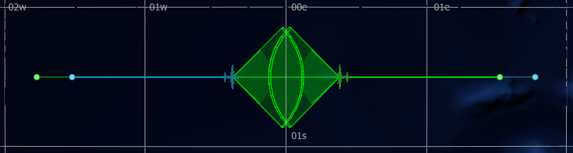
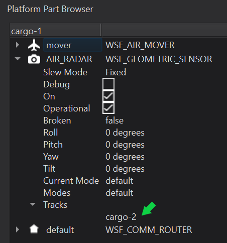
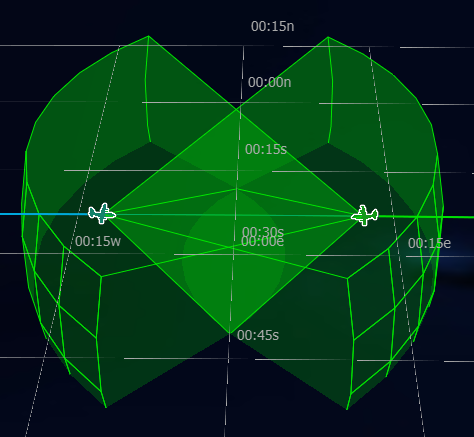
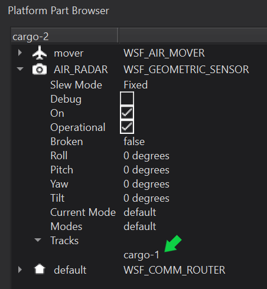

Tracks¶
Tracks are most often created as a direct result of a sensor detecting a platform. Tracks contain information that describes known(truth), and perceived information concerning the subject platform, and what sensor created the track.
Quick Start¶
Note
The following steps assume that the “simple_flight” scenario is present as discussed in Sensors and Signatures.
Run the simple_flight scenario in Warlock.
Pause the simulation.
Advance the simulation time to 15 min using Warlock’s Advance to Time button, shown in the Simulation Control toolbar.
Your simulation should reflect the following as seen in Warlock’s Map Display (Sensor Volumes and Routes visibility may be toggled in Warlock’s Platform Options widget):
Select one of the two platforms and open Warlock’s Platform Part Browser.
Resume the simulation.
Open the dropdown menu for AIR_RADAR > Tracks.
Notice that soon after the approaching platform enters the sensor volume (range) of the selected platform, a track will appear in the AIR_RADAR’s track list.
Select the other platform, and notice that this is the same for the opposite platform’s AIR_RADAR track list as well.
|  |  |  |
Closer Look¶
No additional content will be added for this module. The important take away is that the tracks appearing on the AIR_RADAR sensors are what will be acted upon to ensure that the aircraft do not collide. However, a structural change to the project is necessary for scalability, and is detailed to follow.
In order to keep the simple_flight scenario better organized, separate the existing file simple_flight.txt into the following:
Revised simple_flight.txt |
platform_laydown.txt |
|---|---|
# simple_flight demo
include_once platform_laydown.txt
simulation_name "Simple Flight"
execute at_time 0.1 sec absolute
writeln("\nRun simple_flight\n");
end_execute
end_time 30 min
|
# platform_laydown.txt
# A component of the
# simple_flight demo
include_once cargo_aircraft.txt
platform cargo-1 CARGO_AIRCRAFT
side blue
heading 90 deg
altitude 8000 m
route
position 00:30s 01:30w
altitude 8000 m
speed 500 km/h
position 00:30s 01:45e
end_route
end_platform
platform cargo-2 CARGO_AIRCRAFT
side green
heading -90 deg
altitude 8000 m
route
position 00:30s 01:30e
altitude 8000 m
speed 500 kmh
position 00:30s 01:45w
end_route
end_platform
|
cargo_aircraft.txt |
|---|
# cargo_aircraft.txt
# A component of the simple_flight demo
radar_signature CARGO_AIRCRAFT_RADAR_SIG
constant 10 m^2
end_radar_signature
sensor AIR_RADAR WSF_GEOMETRIC_SENSOR
frame_time 5 sec
maximum_range 30 nm
reports_location
reports_bearing
reports_side
reports_velocity
azimuth_field_of_view -45.0 deg 45.0 deg
elevation_field_of_view -15.0 deg 15.0 deg
ignore_same_side
on
end_sensor
platform_type CARGO_AIRCRAFT WSF_PLATFORM
icon c130
spatial_domain air
category cargo
mover WSF_AIR_MOVER
update_interval 3 sec
end_mover
radar_signature CARGO_AIRCRAFT_RADAR_SIG
add sensor cargo_radar AIR_RADAR
end_sensor
end_platform_type
|
Summary¶
Tracks, usually generated by sensors, are passed to processors, to affect platform behavior. This is key to understanding why certain events transpire in the way that they do over the course of a long or complex simulation run where dozens or potentially hundreds of platforms may affect each others behavior. Processors are discussed in an upcoming module.